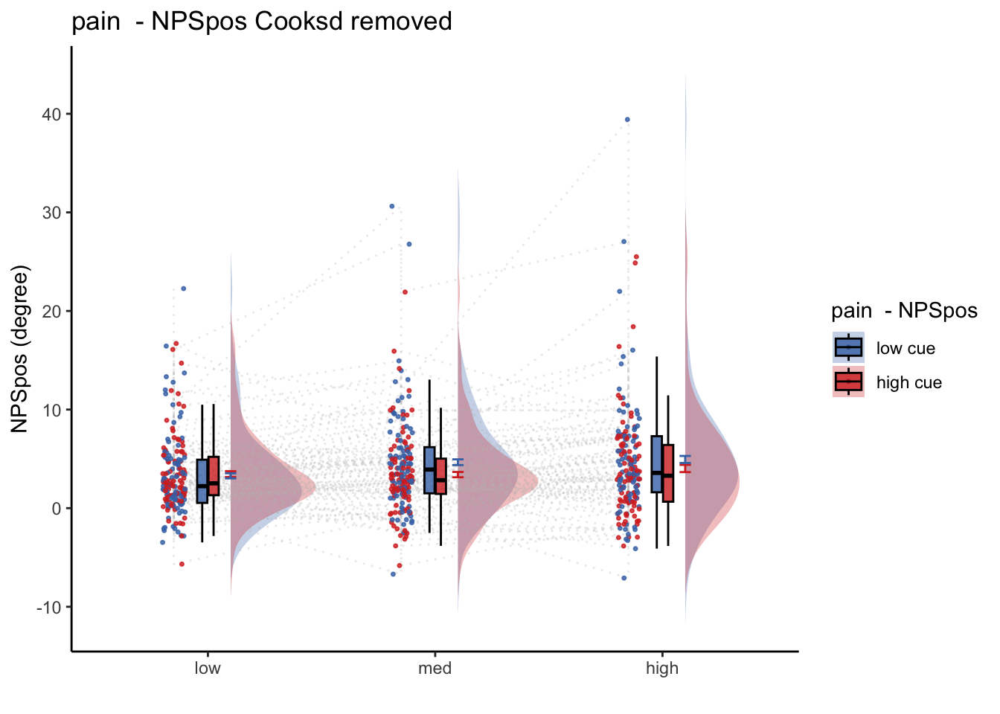
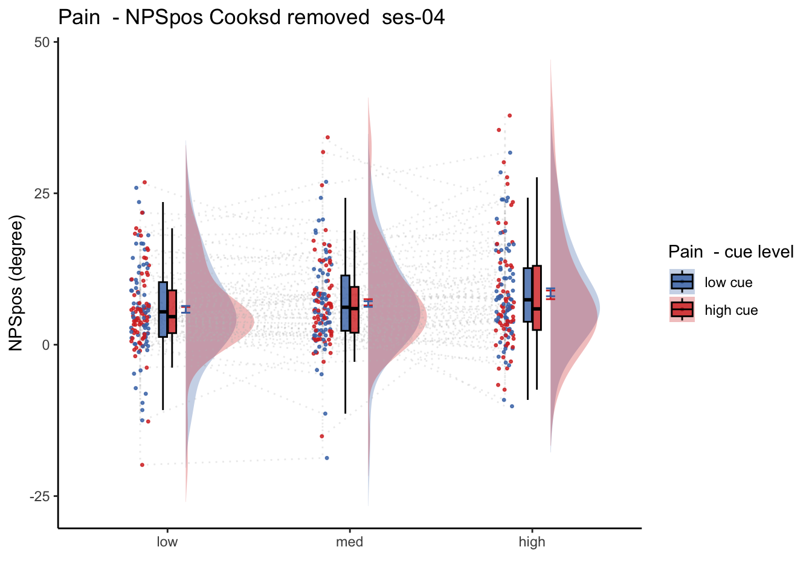
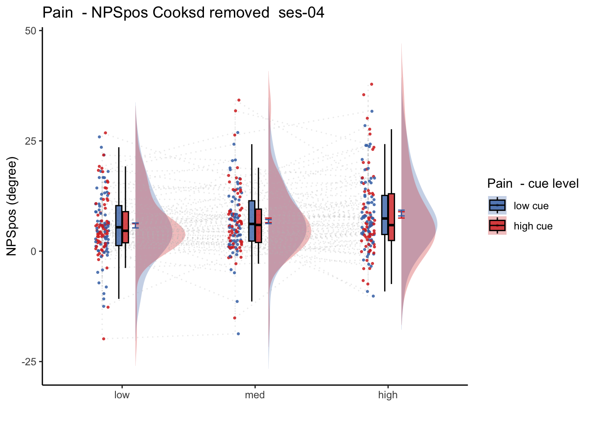
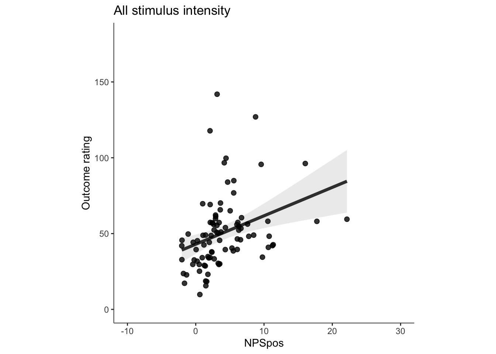
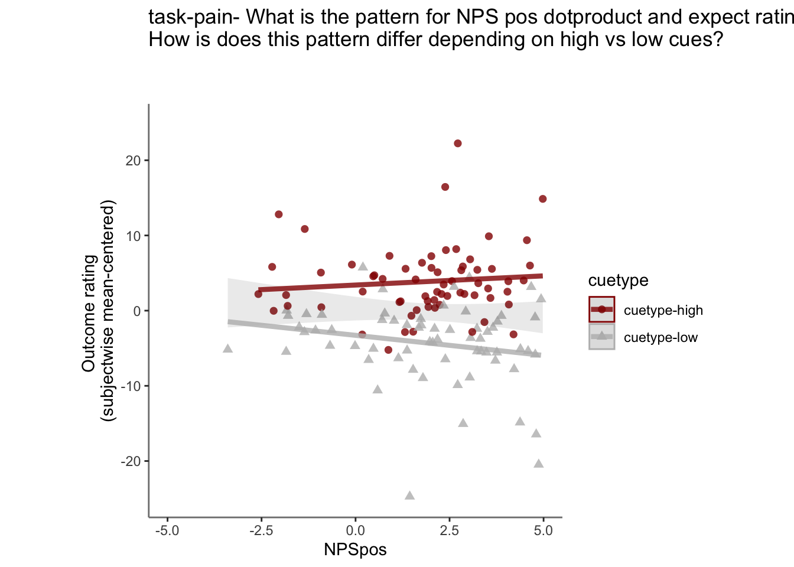

Chapter 26 [fMRI] NPSses01 ~ singletrial
What is the purpose of this notebook?
- Here, I model NPS dot products as a function of cue, stimulus intensity and expectation ratings.
- One of the findings is that low cues lead to higher NPS dotproducts in the high intensity group, and that this effect becomes non-significant across sessions.
- 03/23/2023: For now, I’m grabbing participants that have complete data, i.e. 18 runs, all three sessions.
26.1 NPS ~ paintask: 2 cue x 3 stimulus_intensity
Q. Within pain task, Does stimulus intenisty level and cue level significantly predict NPS dotproducts?

26.1.1 Linear model results (NPS ~ paintask: 2 cue x 3 stimulus_intensity)
model.npscuestim <- lmer(NPSpos ~
CUE_high_gt_low*STIM_linear +CUE_high_gt_low * STIM_quadratic +
(CUE_high_gt_low+STIM|sub), data = data_screen
)
sjPlot::tab_model(model.npscuestim,
title = "Multilevel-modeling: \nlmer(NPSpos ~ CUE * STIM + (CUE + STIM | sub), data = pvc)",
CSS = list(css.table = '+font-size: 12;'))| NPSpos | |||
|---|---|---|---|
| Predictors | Estimates | CI | p |
| (Intercept) | 3.97 | 3.14 – 4.79 | <0.001 |
| CUE high gt low | -0.56 | -1.01 – -0.12 | 0.012 |
| STIM linear | 1.17 | 0.61 – 1.73 | <0.001 |
| STIM quadratic | 0.12 | -0.32 – 0.56 | 0.584 |
|
CUE high gt low * STIM linear |
-0.73 | -1.74 – 0.28 | 0.156 |
|
CUE high gt low * STIM quadratic |
-0.63 | -1.51 – 0.25 | 0.163 |
| Random Effects | |||
| σ2 | 59.13 | ||
| τ00 sub | 20.51 | ||
| τ11 sub.CUE_high_gt_low | 0.62 | ||
| τ11 sub.STIMlow | 1.48 | ||
| τ11 sub.STIMmed | 0.40 | ||
| ρ01 | -1.00 | ||
| -1.00 | |||
| -1.00 | |||
| N sub | 96 | ||
| Observations | 5379 | ||
| Marginal R2 / Conditional R2 | 0.006 / NA | ||
Linear model eta-squared
| Parameter | Eta2_partial | CI | CI_low | CI_high |
|---|---|---|---|---|
| CUE_high_gt_low | 0.0268033 | 0.95 | 0.0030949 | 1 |
| STIM_linear | 0.0924251 | 0.95 | 0.0337019 | 1 |
| STIM_quadratic | 0.0000588 | 0.95 | 0.0000000 | 1 |
| CUE_high_gt_low:STIM_linear | 0.0003820 | 0.95 | 0.0000000 | 1 |
| CUE_high_gt_low:STIM_quadratic | 0.0003688 | 0.95 | 0.0000000 | 1 |
Linear model Cohen’s d: NPS stimulus_intensity d = 1.16, cue d = 0.45
| t | df | d | |
|---|---|---|---|
| CUE_high_gt_low | -2.5039567 | 227.6488 | -0.3319129 |
| STIM_linear | 4.0797610 | 163.4413 | 0.6382396 |
| STIM_quadratic | 0.5476816 | 5104.6798 | 0.0153311 |
| CUE_high_gt_low:STIM_linear | -1.4189305 | 5268.5774 | -0.0390971 |
| CUE_high_gt_low:STIM_quadratic | -1.3943062 | 5269.4504 | -0.0384154 |
26.1.2 2 cue * 3 stimulus_intensity * expectation_rating
data_screen$EXPECT <- data_screen$event02_expect_angle
model.nps3factor <- lmer(NPSpos ~
CUE_high_gt_low*STIM_linear*EXPECT +
CUE_high_gt_low*STIM_quadratic*EXPECT +
(CUE_high_gt_low+STIM + EXPECT|sub), data = data_screen
)## boundary (singular) fit: see help('isSingular')sjPlot::tab_model(model.nps3factor,
title = "Multilevel-modeling: \nlmer(NPSpos ~ CUE * STIM * EXPECTATION + (CUE + STIM + EXPECT | sub), data = pvc)",
CSS = list(css.table = '+font-size: 12;'))| NPSpos | |||
|---|---|---|---|
| Predictors | Estimates | CI | p |
| (Intercept) | 0.92 | 0.08 – 1.76 | 0.031 |
| CUE high gt low | -2.08 | -3.19 – -0.96 | <0.001 |
| STIM linear | -0.13 | -1.04 – 0.78 | 0.779 |
| EXPECT | 0.06 | 0.04 – 0.08 | <0.001 |
| STIM quadratic | 0.70 | -0.08 – 1.47 | 0.078 |
|
CUE high gt low * STIM linear |
-1.47 | -3.21 – 0.27 | 0.098 |
| CUE high gt low * EXPECT | -0.01 | -0.02 – 0.00 | 0.126 |
| STIM linear * EXPECT | 0.03 | 0.02 – 0.05 | <0.001 |
|
CUE high gt low * STIM quadratic |
-1.01 | -2.56 – 0.53 | 0.199 |
| EXPECT * STIM quadratic | -0.01 | -0.03 – -0.00 | 0.042 |
|
(CUE high gt low * STIM linear) * EXPECT |
-0.01 | -0.04 – 0.02 | 0.561 |
|
(CUE high gt low EXPECT) STIM quadratic |
0.01 | -0.01 – 0.04 | 0.408 |
| Random Effects | |||
| σ2 | 51.88 | ||
| τ00 sub | 13.24 | ||
| τ11 sub.CUE_high_gt_low | 14.58 | ||
| τ11 sub.STIMlow | 1.54 | ||
| τ11 sub.STIMmed | 0.23 | ||
| τ11 sub.EXPECT | 0.01 | ||
| ρ01 | 0.27 | ||
| -0.59 | |||
| -0.78 | |||
| -0.39 | |||
| ICC | 0.33 | ||
| N sub | 96 | ||
| Observations | 5189 | ||
| Marginal R2 / Conditional R2 | 0.056 / 0.365 | ||
eta squared
| Parameter | Eta2_partial | CI | CI_low | CI_high |
|---|---|---|---|---|
| CUE_high_gt_low | 0.0927565 | 0.95 | 0.0284571 | 1 |
| STIM_linear | 0.0001193 | 0.95 | 0.0000000 | 1 |
| EXPECT | 0.3185087 | 0.95 | 0.1831435 | 1 |
| STIM_quadratic | 0.0007529 | 0.95 | 0.0000000 | 1 |
| CUE_high_gt_low:STIM_linear | 0.0005568 | 0.95 | 0.0000000 | 1 |
| CUE_high_gt_low:EXPECT | 0.0021762 | 0.95 | 0.0000000 | 1 |
| STIM_linear:EXPECT | 0.0051544 | 0.95 | 0.0018825 | 1 |
| CUE_high_gt_low:STIM_quadratic | 0.0003341 | 0.95 | 0.0000000 | 1 |
| EXPECT:STIM_quadratic | 0.0008474 | 0.95 | 0.0000167 | 1 |
| CUE_high_gt_low:STIM_linear:EXPECT | 0.0000688 | 0.95 | 0.0000000 | 1 |
| CUE_high_gt_low:EXPECT:STIM_quadratic | 0.0001382 | 0.95 | 0.0000000 | 1 |
Cohen’s d
## boundary (singular) fit: see help('isSingular')| t | df | d | |
|---|---|---|---|
| CUE_high_gt_low | -3.6430277 | 129.80897 | -0.6394994 |
| STIM_linear | -0.2806928 | 660.42380 | -0.0218449 |
| EXPECT | 5.9981446 | 76.97911 | 1.3672896 |
| STIM_quadratic | 1.7640294 | 4129.73551 | 0.0549003 |
| CUE_high_gt_low:STIM_linear | -1.6571252 | 4928.86242 | -0.0472076 |
| CUE_high_gt_low:EXPECT | -1.5307022 | 1074.34045 | -0.0934006 |
| STIM_linear:EXPECT | 4.1528960 | 3328.72201 | 0.1439602 |
| CUE_high_gt_low:STIM_quadratic | -1.2846933 | 4937.67801 | -0.0365652 |
| EXPECT:STIM_quadratic | -2.0379884 | 4897.26714 | -0.0582445 |
| CUE_high_gt_low:STIM_linear:EXPECT | -0.5813002 | 4912.57197 | -0.0165873 |
| CUE_high_gt_low:EXPECT:STIM_quadratic | 0.8270095 | 4947.15001 | 0.0235160 |
26.2 NPS_ses01 ~ SES * CUE * STIM
Q. Is the cue effect on NPS different across sessions?
Quick answer: Yes, the cue effect in session 1 (for high intensity group) is significantly different; whereas this different becomes non significant in session 4. To unpack, a participant was informed to experience a low stimulus intensity, when in fact they were delivered a high intensity stimulus. This violation presumably leads to a higher NPS response, given that they were delivered a much painful stimulus than expected. The fact that the cue effect is almost non significant during the last session indicates that the cue effects are not just an anchoring effect.

 
26.3 OUTCOME ~ NPS
Q. Do higher NPS values indicate higher outcome ratings? (Pain task only)
Yes, Higher NPS values are associated with higher outcome ratings. The linear relationship between NPS value and outcome ratings are stronger for conditions where cue level is congruent with stimulus intensity levels. In other words, NPS-outcome rating relationship is stringent in the low cue-low intensity group, as is the case for high cue-ghigh intensity group.

26.3.3 demeaned outcome rating * cue
## `geom_smooth()` using formula = 'y ~ x'## Warning: Removed 54 rows containing non-finite values (`stat_smooth()`).## `geom_smooth()` using formula = 'y ~ x'## Warning: Removed 54 rows containing non-finite values (`stat_smooth()`).## Warning: Removed 54 rows containing missing values (`geom_point()`).

26.3.5 Is this statistically significant?
# organize variable names
# NPS_demean vs. NPSpos
model.npsoutcome <- lmer(OUTCOME_demean ~ CUE_high_gt_low*STIM_linear*NPSpos + CUE_high_gt_low*STIM_quadratic*NPSpos + (CUE_high_gt_low*STIM*NPSpos|sub), data = demean_dropna)## Warning: Model failed to converge with 2 negative eigenvalues: -5.7e+00 -5.0e+01sjPlot::tab_model(model.npsoutcome,
title = "Multilevel-modeling: \nlmer(OUTCOME_demean ~ CUE * STIM * NPSpos + (CUE * STIM *NPSpos | sub), data = pvc)",
CSS = list(css.table = '+font-size: 12;'))| OUTCOME_demean | |||
|---|---|---|---|
| Predictors | Estimates | CI | p |
| (Intercept) | -4.15 | -5.57 – -2.73 | <0.001 |
| CUE high gt low | 8.18 | 6.34 – 10.03 | <0.001 |
| STIM linear | 21.91 | 19.50 – 24.32 | <0.001 |
| NPSpos | 0.94 | 0.71 – 1.18 | <0.001 |
| STIM quadratic | -0.68 | -2.47 – 1.11 | 0.458 |
|
CUE high gt low * STIM linear |
2.26 | -1.81 – 6.32 | 0.276 |
| CUE high gt low * NPSpos | 0.06 | -0.15 – 0.26 | 0.582 |
| STIM linear * NPSpos | 0.21 | -0.04 – 0.47 | 0.098 |
|
CUE high gt low * STIM quadratic |
-4.75 | -8.38 – -1.12 | 0.010 |
| NPSpos * STIM quadratic | 0.00 | -0.20 – 0.21 | 0.966 |
|
(CUE high gt low * STIM linear) * NPSpos |
-0.24 | -0.73 – 0.24 | 0.327 |
|
(CUE high gt low NPSpos) STIM quadratic |
-0.02 | -0.44 – 0.40 | 0.935 |
| Random Effects | |||
| σ2 | 794.43 | ||
| τ00 sub | 51.98 | ||
| τ11 sub.CUE_high_gt_low | 13.00 | ||
| τ11 sub.STIMlow | 37.11 | ||
| τ11 sub.STIMmed | 18.50 | ||
| τ11 sub.NPSpos | 1.01 | ||
| τ11 sub.CUE_high_gt_low:STIMlow | 9.05 | ||
| τ11 sub.CUE_high_gt_low:STIMmed | 20.55 | ||
| τ11 sub.CUE_high_gt_low:NPSpos | 0.12 | ||
| τ11 sub.STIMlow:NPSpos | 0.12 | ||
| τ11 sub.STIMmed:NPSpos | 0.04 | ||
| τ11 sub.CUE_high_gt_low:STIMlow:NPSpos | 0.36 | ||
| τ11 sub.CUE_high_gt_low:STIMmed:NPSpos | 0.59 | ||
| ρ01 | -1.00 | ||
| -0.70 | |||
| -0.72 | |||
| -0.61 | |||
| 0.73 | |||
| -0.17 | |||
| 0.15 | |||
| -0.66 | |||
| -0.14 | |||
| 0.02 | |||
| 0.18 | |||
| N sub | 96 | ||
| Observations | 5392 | ||
| Marginal R2 / Conditional R2 | 0.178 / NA | ||
26.4 NPS ~ expectation_rating
Q. What is the relationship betweeen expectation ratings & NPS? (Pain task only)
Do we see a linear effect between expectation rating and NPS dot products? Also, does this effect differ as a function of cue and stimulus intensity ratings, as is the case for behavioral ratings?
Quick answer: Yes, expectation ratings predict NPS dotproducts; Also, there tends to be a different relationship depending on cues, just by looking at the figures, although this needs to be tested statistically.

26.4.7 Is this statistically significant?
model.npsexpectdemean <- lmer(NPSpos ~
CUE_high_gt_low*STIM_linear*EXPECT_demean +
CUE_high_gt_low*STIM_quadratic*EXPECT_demean +
(CUE_high_gt_low+STIM+EXPECT_demean|sub), data = demean_dropna
)
sjPlot::tab_model(model.npsexpectdemean,
title = "Multilevel-modeling: \nlmer(NPSpos ~ CUE * STIM * EXPECT_demean + (CUE + STIM + EXPECT_demean| sub), data = pvc)",
CSS = list(css.table = '+font-size: 12;'))| NPSpos | |||
|---|---|---|---|
| Predictors | Estimates | CI | p |
| (Intercept) | 4.07 | 3.23 – 4.92 | <0.001 |
| CUE high gt low | -2.44 | -3.40 – -1.48 | <0.001 |
| STIM linear | 1.40 | 0.75 – 2.04 | <0.001 |
| EXPECT demean | 0.05 | 0.03 – 0.07 | <0.001 |
| STIM quadratic | 0.06 | -0.44 – 0.57 | 0.809 |
|
CUE high gt low * STIM linear |
-2.02 | -3.14 – -0.89 | <0.001 |
|
CUE high gt low * EXPECT demean |
-0.01 | -0.03 – 0.00 | 0.093 |
|
STIM linear * EXPECT demean |
0.03 | 0.02 – 0.05 | <0.001 |
|
CUE high gt low * STIM quadratic |
-0.22 | -1.22 – 0.79 | 0.673 |
|
EXPECT demean * STIM quadratic |
-0.02 | -0.04 – -0.01 | 0.005 |
|
(CUE high gt low * STIM linear) * EXPECT demean |
-0.01 | -0.05 – 0.02 | 0.535 |
|
(CUE high gt low * EXPECT demean) * STIM quadratic |
0.01 | -0.03 – 0.04 | 0.730 |
| Random Effects | |||
| σ2 | 51.82 | ||
| τ00 sub | 21.73 | ||
| τ11 sub.CUE_high_gt_low | 14.64 | ||
| τ11 sub.STIMlow | 2.24 | ||
| τ11 sub.STIMmed | 0.55 | ||
| τ11 sub.EXPECT_demean | 0.01 | ||
| ρ01 | -0.67 | ||
| -0.94 | |||
| -0.88 | |||
| 0.53 | |||
| N sub | 96 | ||
| Observations | 5201 | ||
| Marginal R2 / Conditional R2 | 0.051 / NA | ||
demean_dropna$EXPECT <- demean_dropna$event02_expect_angle
model.npsexpect <- lmer(NPSpos ~
CUE_high_gt_low*STIM_linear*EXPECT +
CUE_high_gt_low*STIM_quadratic*EXPECT +
(CUE_high_gt_low+STIM+EXPECT|sub), data = demean_dropna
)
sjPlot::tab_model(model.npsexpect,
title = "Multilevel-modeling: \nlmer(NPSpos ~ CUE * STIM * EXPECT + (CUE + STIM + EXPECT| sub), data = pvc)",
CSS = list(css.table = '+font-size: 12;'))| NPSpos | |||
|---|---|---|---|
| Predictors | Estimates | CI | p |
| (Intercept) | 0.88 | 0.07 – 1.69 | 0.033 |
| CUE high gt low | -2.13 | -3.25 – -1.01 | <0.001 |
| STIM linear | -0.17 | -1.07 – 0.74 | 0.719 |
| EXPECT | 0.06 | 0.04 – 0.08 | <0.001 |
| STIM quadratic | 0.68 | -0.09 – 1.46 | 0.084 |
|
CUE high gt low * STIM linear |
-1.47 | -3.21 – 0.27 | 0.098 |
| CUE high gt low * EXPECT | -0.01 | -0.02 – 0.00 | 0.141 |
| STIM linear * EXPECT | 0.03 | 0.02 – 0.05 | <0.001 |
|
CUE high gt low * STIM quadratic |
-1.10 | -2.64 – 0.45 | 0.164 |
| EXPECT * STIM quadratic | -0.01 | -0.03 – -0.00 | 0.045 |
|
(CUE high gt low * STIM linear) * EXPECT |
-0.01 | -0.04 – 0.02 | 0.548 |
|
(CUE high gt low EXPECT) STIM quadratic |
0.01 | -0.01 – 0.04 | 0.384 |
| Random Effects | |||
| σ2 | 51.99 | ||
| τ00 sub | 11.22 | ||
| τ11 sub.CUE_high_gt_low | 14.67 | ||
| τ11 sub.STIMlow | 1.22 | ||
| τ11 sub.STIMmed | 0.12 | ||
| τ11 sub.EXPECT | 0.01 | ||
| ρ01 | 0.29 | ||
| -0.49 | |||
| -0.66 | |||
| -0.40 | |||
| ICC | 0.31 | ||
| N sub | 96 | ||
| Observations | 5201 | ||
| Marginal R2 / Conditional R2 | 0.057 / 0.354 | ||
demean_dropna$EXPECT <- demean_dropna$event02_expect_angle
model.npsd_expectd <- lmer(NPS_demean ~
CUE_high_gt_low*STIM_linear*EXPECT_demean +
CUE_high_gt_low*STIM_quadratic*EXPECT_demean +
(CUE_high_gt_low+STIM+EXPECT_demean|sub), data = demean_dropna
)## Warning: Model failed to converge with 1 negative eigenvalue: -9.6e+01sjPlot::tab_model(model.npsd_expectd,
title = "Multilevel-modeling: \nlmer(NPS_demean ~ CUE * STIM * EXPECT_demean + (CUE + STIM + EXPECT_demean| sub), data = pvc)",
CSS = list(css.table = '+font-size: 12;'))| NPS_demean | |||
|---|---|---|---|
| Predictors | Estimates | CI | p |
| (Intercept) | 0.10 | -0.13 – 0.33 | 0.404 |
| CUE high gt low | -2.04 | -2.98 – -1.09 | <0.001 |
| STIM linear | 1.14 | 0.57 – 1.71 | <0.001 |
| EXPECT demean | 0.05 | 0.03 – 0.07 | <0.001 |
| STIM quadratic | 0.03 | -0.47 – 0.53 | 0.920 |
|
CUE high gt low * STIM linear |
-1.96 | -3.07 – -0.84 | 0.001 |
|
CUE high gt low * EXPECT demean |
-0.01 | -0.03 – 0.00 | 0.142 |
|
STIM linear * EXPECT demean |
0.03 | 0.02 – 0.05 | <0.001 |
|
CUE high gt low * STIM quadratic |
-0.26 | -1.26 – 0.74 | 0.609 |
|
EXPECT demean * STIM quadratic |
-0.02 | -0.04 – -0.01 | 0.006 |
|
(CUE high gt low * STIM linear) * EXPECT demean |
-0.01 | -0.04 – 0.03 | 0.674 |
|
(CUE high gt low * EXPECT demean) * STIM quadratic |
0.01 | -0.03 – 0.04 | 0.702 |
| Random Effects | |||
| σ2 | 51.02 | ||
| τ00 sub | 0.06 | ||
| τ11 sub.CUE_high_gt_low | 13.60 | ||
| τ11 sub.STIMlow | 0.26 | ||
| τ11 sub.STIMmed | 0.08 | ||
| τ11 sub.EXPECT_demean | 0.01 | ||
| ρ01 | 0.02 | ||
| -0.99 | |||
| -0.97 | |||
| 0.27 | |||
| ICC | 0.09 | ||
| N sub | 96 | ||
| Observations | 5201 | ||
| Marginal R2 / Conditional R2 | 0.037 / 0.128 | ||